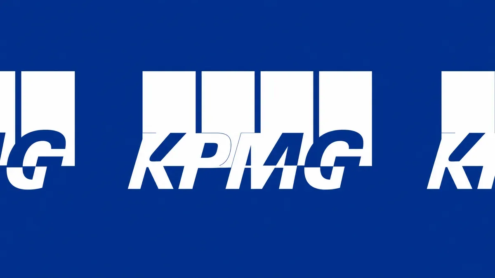
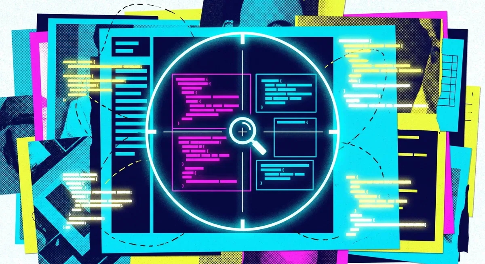

ИсследованияИндустрия
Нейросеть из коз в Age of Empires II как критика антропоморфизации ИИ
Козы вместо нейронов: зачем исследователь Microsoft сломал логику половины ИИ-науки
The Decoder
17 июн. 2026 г.Материалы из источника The Decoder.
73 материалов
Козы вместо нейронов: зачем исследователь Microsoft сломал логику половины ИИ-науки

Amazon, Nvidia и AMD поставили $310 млн на стартап, который учит ИИ понимать физику мира

Открытая модель GLM-5.2 почти догнала Claude Opus 4.8 на многочасовых задачах кодирования

Роботы Nvidia учатся сами: ИИ-агенты пишут код, тестируют гипотезы и достигают 99% точности

Как OpenAI учит предсказывать сбои ИИ до релиза — и почему стандартные тесты дают осечку

Epoch ИИ: к середине 2026 года ИИ-расходы техгигантов превысят их денежный поток

Microsoft хочет сделать Copilot Cowork дешевле — за счёт DeepSeek V4 и оплаты по факту использования

Два немецких суда вынесли противоположные решения по ИИ-поиску Google — кто прав?

SpaceX заплатила $60 млрд за Cursor — и признала, что xAI отстаёт от OpenAI и Anthropic в ИИ-кодинге

Grok — военная необходимость? Минюст США встал на защиту незаконных турбин xAI

Какие ИИ-модели повторяют российские нарративы, а какие их отвергают — первый систематический тест

Anthropic остановила реформу биллинга в последний момент — IPO и ценовая война с OpenAI изменили расчёты

DeepSeek взял деньги впервые — $7,4 млрд без права голоса для инвесторов

США против Anthropic: можно ли вообще создать LLM, которую нельзя взломать?

Как сканирование покестопов превратилось в технологию навигации военных беспилотников

США отключили модели Anthropic для всего мира — Европа ищет ответ, но единого мнения нет

Наделла боится не конкурентов — он боится, что корпоративные знания утекут к нескольким ИИ-гигантам

Microsoft Research придумала, как видеогенератор запоминает комнату — без хранения ни одного пикселя

Google открыл стандарт OKF: Markdown-файлы вместо разрозненных вики, каталогов и комментариев в коде

KPMG продавала клиентам ИИ через кейсы, которых не существовало — скандал разобрал GPTZero

Новый benchmark показал: ИИ-агенты видят нужный файл, но пропускают критичные строки кода
Amazon инвестирует в Anthropic и одновременно сдаёт её модель властям — что произошло с Fable

Одна модель считает людей в толпе, клетки под микроскопом и машины со спутника — и ошибается вдвое меньше конкурентов

Наделла против token-maxing: почему мощные ИИ-модели не нужны для каждой задачи

Google Research обошла OpenAI и Anthropic в переводе текста в SQL-запросы — разрыв составил более 7 п.п.

Один Markdown-файл вместо дообучения: как Microsoft научила GPT-5.5 работать лучше без изменения весов

Claude Fable 5 набрал 88% на самом сложном уровне FrontierMath — GPT-5.5 отстаёт на 13 пунктов

Meta тратит миллиарды на ИИ внутри компании — и теперь вводит лимиты на токены для сотрудников

Китайская open-weights модель для кода дешевле GPT-5.5 в 12 раз — но насколько она хороша?

США отключили самые мощные модели Anthropic глобально — компания выполняет приказ, но называет его ошибкой